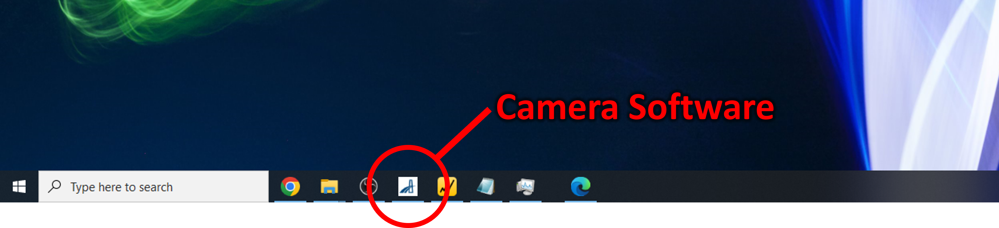
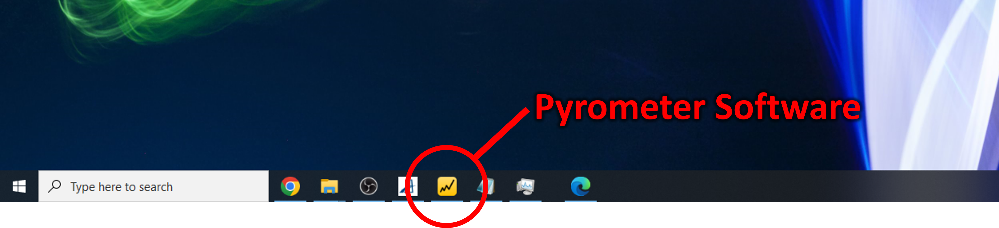
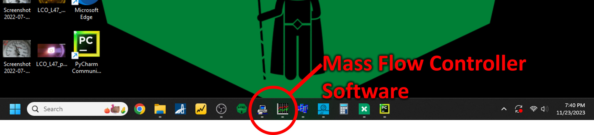

Startup guide
Purpose: A reference to be used each and every time by experienced users of the furnace.
-
Create a new Growth Log in the "Growth Logs" folder in the LOKII Google Drive.
-
On the front of each of the seven laser units, turn the key clockwise to the "ON" position.

-
On the front of the translator control unit, flip the power switch on the top right.

-
On Computer 1, open the camera software, Pylon Viewer (more info) 
-
On Computer 1, open the pyrometer software, DataTemp MultiDrop (more info) 
-
On Computer 2, open the thermocouple software, DP1001 AM (more info)

-
On Computer 2, open the Laser Controller Software (more info)

-
On Computer 2, open the webcam software to monitor the pressure gauge, Logitech Camera Settings (more info)

-
On Computer 2, open the mass flow controller software, FlowDDE and FlowPlot (more info) 
Slide bottom translator down
Place shroud cup with collar
Place bottom seal ring
Attach collar to shaft 2 cm from tip
Add alumina washer on top of collar
Mount seed rod in seed rod holder (can be link)
Mount seed rod holder on bottom translator shaft
Install lower shroud, groove down, hole to gas
Install shroud window
Raise bottom translator housing
Place top seal ring
Carefully lower top shroud into chamber until it rests on glass shroud window
Mount feed rod in feed rod holder (see link)
Measure length of mounted feed rod and record in Growth Log
Attach washer and collar to upper translator shaft 2 cm from tip
Attach washer and feed rod holder to upper translator shaft
Slide upper translator down, careful not to collide the rods
Seal lower and upper clamps to 23 ft-lbs (see link)
Close chamber outlet valves (ball then needle)
Open chamber inlet valves (ball then needle)
Pressurize chamber (see link)
If static pressure, close inlet valves
Bring feed and seed to starting positions
Focus and align camera and pyrometer
Place filtering optics in place (see link)
Hang laser safety sign on door
Put on laser safety goggles
Close laser curtains
Press green "Start" button on each laser to enable emission (see link)
Enable communication with all seven lasers from controller software
Begin logging pyrometer readings (see link)
Begin recording screens (see link)
Begin growth! (see link)